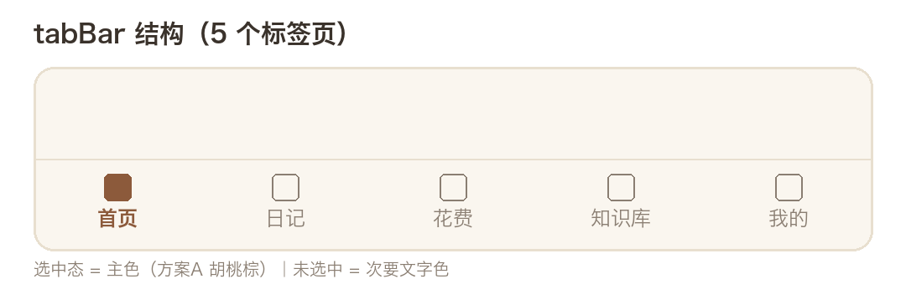
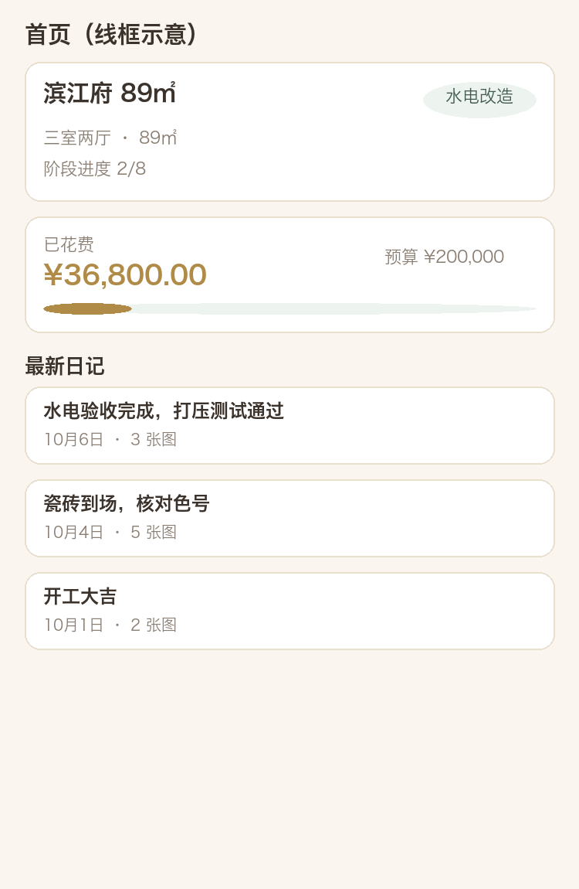
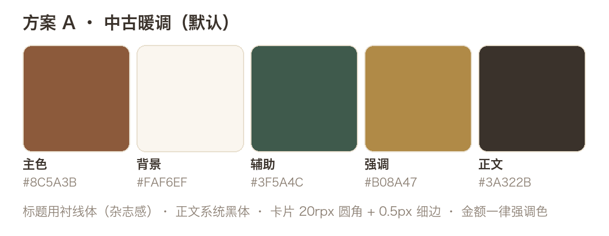
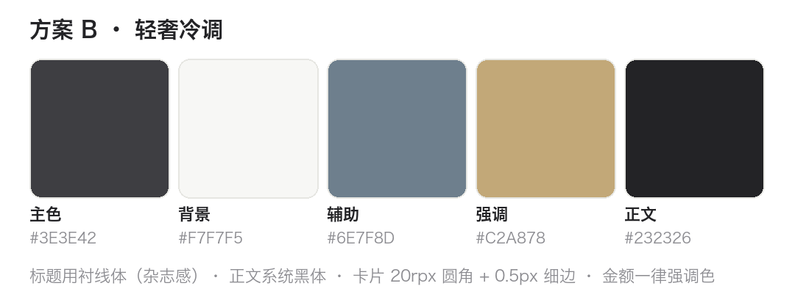

一、产品定位
| 用户 | 核心场景 |
|---|---|
| 业主（主记录者） | 每天拍照记录施工进展，记花费，随时查知识库 |
| 家庭成员 | 远程查看进度，补充记录，共同核对账单 |
| 好友 | 被邀请查看（只读），给建议 |
二、技术架构
前端为微信原生小程序（WXML/WXSS/JS），后端为 WorkBuddy 云服务（数据库、认证、存储、LLM 四模块），经云服务 SDK 小程序专用入口集成。同步协议为「增量拉取为主、推送为增强」的三级降级链；所有写操作携带 version 乐观锁，并发冲突由用户选择保留版本。
三、页面结构与 tabBar
小程序共 5 个一级标签页，加二级功能页共 13 个页面（M1 范围）。

| 标签页 | 核心内容 |
|---|---|
| 首页 | 当前阶段卡片、预算 vs 已花进度条、最新 3 篇日记 |
| 日记 | 按日分组时间线，右下角「记一篇」悬浮按钮 |
| 花费 | 预算看板（已花/剩余/分类汇总）、明细列表 |
| 知识库 | 7 大分类横滑、关键词搜索、文章卡片流 |
| 我的 | 项目切换、外观（主题）切换、关于 |

四、视觉设计（双主题，用户可切换）
视觉与业主家装审美同频（中古风 / 轻奢风）。两套主题令牌结构一致，在「我的 → 外观」随时切换，选择持久化本地，默认方案 A。
方案 A · 中古暖调（默认）

方案 B · 轻奢冷调

| 令牌 | 方案 A | 方案 B | 用途 |
|---|---|---|---|
| 主色 primary | #8C5A3B 胡桃棕 | #3E3E42 炭灰 | 主按钮、tabBar 选中 |
| 背景 bg | #FAF6EF 奶油白 | #F7F7F5 云雾白 | 页面背景 |
| 辅助 secondary | #3F5A4C 墨绿 | #6E7F8D 雾霾蓝 | 阶段标签、进度 |
| 强调 accent | #B08A47 黄铜 | #C2A878 香槟金 | 金额、预算环 |
| 正文 text | #3A322B 深棕灰 | #232326 近黑 | 正文标题 |
共用规则：标题衬线体（杂志感）、正文系统黑体；卡片 20rpx 圆角 + 0.5px 细边、无阴影；金额一律金色系（不用红绿）；阶段状态按「灰 → 辅助色 → 主色」递进。
五、数据模型（13 张表）
数据库全部启用行级安全（RLS），权限唯一事实来源为 members 表，配合三个权限函数：is_project_member / is_project_editor / is_project_owner。金额一律整数分存储；version 为乐观锁；日记与花费软删除。
| 表 | 说明 | 关键字段 |
|---|---|---|
| profiles | 用户档案 | nick_name、avatar_url |
| projects | 装修项目 | name、budget（分）、status、version |
| members | 项目成员（权限载体） | project_id + user_id 唯一、role（owner/editor/viewer） |
| rooms / stages | 房间 / 施工阶段（建项预置） | name、status、sort_order |
| diaries | 图文日记 | title、content、image_paths、room_id、stage_id、version |
| materials | 材料清单 | category、quantity、unit_price、total_price、status |
| expenses | 花费明细 | type、amount（分）、pay_date、version |
| knowledge_categories | 知识分类（预置 7 类） | key、name、sort_order |
| knowledge_articles | 知识文章（带图） | scope、project_id、contributor_id、link_hash、image_paths |
| knowledge_comments | 文章评论 | article_id、content（可见性跟随文章） |
| revisions | 编辑历史 | collection、doc_id、prev/new_version |
| invites | 邀请码（M2） | code、role、expire_at、status |
六、知识库集成（ima 共享库 → 小程序）
| 层 | 内容来源 | 可见范围 | 写入方式 |
|---|---|---|---|
| 官方预置库 | ima「装修小常识」批量整理 | 全小程序只读 | 运维脚本导入 |
| 项目共享库 | 成员在同一 ima 共享库共建的笔记（含现场图） | 本项目成员 | 小程序导入页链接导入 |
| 公共广场（V1.x 可选） | 项目共享中被推荐的内容 | 全小程序 | 推荐 + 审核 |
分工边界：ima 共享库负责「日常共建」（快、随意、可反复改）；小程序知识库负责「精选沉淀」（带分类标签、配图与评论，可与施工阶段/花费对照检索）。导入是主动的精选动作，语义为「快照沉淀」，不做双端同步；按 link_hash 去重。
链接解析三级降级：P1 ima 开放 API → P2 抓取免登录 H5 分享页 → P3 手动粘贴正文（必做兜底）。落地前需实测 ima 分享链接形态。
七、多人协作与实时同步
| 能力 | owner | editor | viewer |
|---|---|---|---|
| 查看项目全部内容 | ✓ | ✓ | ✓ |
| 写/改日记、材料、花费 | ✓ | ✓ | — |
| 更新施工阶段状态 | ✓ | ✓ | — |
| 邀请成员 / 改角色 / 移除 | ✓ | — | — |
| 项目设置、删除项目 | ✓ | — | — |
同步规格：每集合记录 lastSyncAt，onShow 与下拉刷新时增量拉取（含删除墓碑）；实时性三级——L1 云端推送（验证后启用）、L2 前台轮询 20 秒、L3 仅 onShow。写冲突：编辑页记录 baseVersion，提交时「id + version」双条件更新，冲突时拉取最新版本由用户选择；受控写操作追加 revisions 记录。
八、分期交付
| 里程碑 | 内容 | 状态 |
|---|---|---|
| M1 数据底座 + 单人核心 | 登录、建项目、日记/花费/材料 CRUD、阶段看板、知识库浏览 | 实施中 |
| M2 多人协作 | 邀请/加入、三角色权限、冲突 UI、增量同步、ima 链接导入 | 待启动 |
| M3 体验增强 | 订阅消息、花费图表、材料联动花费、实时推送 | 待启动 |
| V1.3 | LLM 装修问答、周报摘要、ima API 直连 | 规划中 |
九、待确认事项
| # | 事项 | 影响 |
|---|---|---|
| 1 | ima「装修小常识」官方内容能否批量导出、条目量级 | 决定预置管道脚本化还是人工整理 |
| 2 | ima 共享库笔记分享链接形态（免登录 H5 或 ima 自家小程序卡片） | 决定解析策略上限，建议尽快实测一篇 |